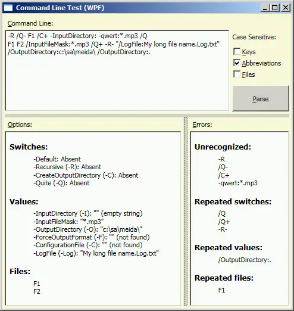

Table of Contents
1. Introduction
This article is the third article of the small series of articles on enumeration types I'm presenting to CodeProject members:
- Enumeration Types do not Enumerate! Working around .NET and Language Limitations
- Human-readable Enumeration Meta-data
- The present article
- Bitwise Enumeration Editor for PropertyGrid and Visual Studio
I will use the same code base, upgraded with new features (version 3.0.0.0). I will also refer to my previous works where it is needed for proper understanding of the matter.
While the first two articles were dedicated to extending of .NET functionality through enumeration-based generic classes, the third article is about application of all the features introduced in the first two. And this is a very interesting application.
My command line utility does not cover an extensive range of different options and validation methods, as some advanced utilities do. Just the opposite, it is confined to a very modest yet practical set of options and formatting styles of command line parameters.
The real value of my utility is the ease of use and robustness. This is explained in the next section.
2. Why Yet Another Command Line Utility?
There are many solutions used to parse and categorize command line. I did not like any of them. They all require massive data that define what parameters are expected. The problem is that it is mostly string data which should be used in two places: when command line documentation is generated and when command line data is checked. This presents a support challenge: if the description of command line has to be modified, it will probably be modified in functional part first, when a parameter is checked. The documentation can be easily forgotten.
More importantly, the consistency of command line parameters described using string data allows no validation during compile time.
A while ago, I realized that the data use to define command line functionality should be meta-data. The enumeration types were the candidate number one for me, because they immediately provide string representation of every member and at the same time guarantee uniqueness of every member, which is validated during run time.
Also, my solution looks very light weight and easy to use, especially from the point of view of the application developer. To appreciate this, see the next section.
3. Basic Usage
I'll illustrate the usage based on two enumeration types I used in my second article of the series, with few changes:
using DescriptionAttribute = SA.Universal.Enumerations.DescriptionAttribute;
using AbbreviationAttribute = SA.Universal.Enumerations.AbbreviationAttribute;
[Description(typeof(EnumerationDeclaration.Descriptions))]
enum StringOption {
[Abbreviation(1)] InputDirectory,
InputFileMask,
[Abbreviation(1)] OutputDirectory,
[Abbreviation(1)] ForceOutputFormat,
[Abbreviation(1)] ConfigurationFile,
[Abbreviation(3)] LogFile,
}
[Description(typeof(EnumerationDeclaration.Descriptions))]
enum BitsetOption {
[Abbreviation(1)] Default,
[Abbreviation(1)] Recursive,
[Abbreviation(1)] CreateOutputDirectory,
[Abbreviation(1)] Quite,
}
Here are the differences: we do not need DisplayName attribute; we also do not need to specify integer value for enumeration members or System.Flags attribute — bit set functionality will be replaced with CommandLine class functionality. Therefore, the type BitsetOptions is renamed to BitsetOption, just to obey Microsoft naming recommendations. Instead, we're using newly introduced Abbreviation attribute used to specify each or every command options in two forms: full and abbreviated.
Now we can instantiate the command line with two generic parameters:
using CommandLine = SA.Universal.Utilities.CommandLine<BitsetOption, StringOption>;
CommandLine CommandLine = new CommandLine(CommandLineParsingOptions.DefaultMicrosoft);
Here is the example of command line:
-Log:log.txt /ForceOutputFormat:mp3 -C+ /R input1.wav
input2.wav /q- /q /some_invalid_parameter
-another_invalid:blah-blah
From this example, one can see: the enumeration members are used to specify some kind of command line keywords prefixed with slash or dash character; some command line parameters go without this prefix character (and they are valid); keywords can be abbreviated according to number of characters specified in Abbreviation attribute.
This is how to access command line parameters during run-time:
string outputDirectory = CommandLine[StringOption.OutputDirectory];
if (CommandLine[BitsetOption.CreateOutputDirectory]
&& string.IsNullOrEmpty(outputDirectory))
System.IO.Directory.CreateDirectory(outputDirectory);
bool recursive = CommandLine[BitsetOption.Recursive];
string[] files = CommandLine.Files;
string[] unrecognized = CommandLine.UnrecognizedOptions;
string[] repeatedSwitch = CommandLine.RepeatedSwitches;
4. Command Line Schema
Let's describe the general data schema used by the command line in detail. Command line is represented as a set of parameters delimited by blank spaces or combinations of blank spaces and quotation marks (""); we classify the options into three forms:
1) Switch Parameter:
/|-<keyword>[-|+]
2) Value Parameter:
/|-<keyword>:[<value>]
3) File Parameter: any string not prefixed with keyword indicator (dash or slash)
Here, squared brackets, vertical bar and angular brackets Backus-Naur Form meta-symbols, <keyword> is one of the enumeration member names of the types passed to CommandLine as generic type arguments: the first parameter provides meta-data for the Switch Parameter form, second one — for Value Parameter form.
A File Parameter goes without keyword indicator and can be any arbitrary string. This kind of parameter is called File just because most typical use is specification of a set of file names for general purpose. For example, editors usually attempt to open each file from this set; media players put the filenames in the play list, etc. However, Files could be anything.
A keyword can come in full or abbreviated form. The abbreviated form can be used if the SA.Universal.Enumerations.Abbrevation attribute is applied:
using AbbreviationLength = System.Byte;
[AttributeUsage(AttributeTargets.Field, AllowMultiple = false, Inherited = false)]
public class AbbreviationAttribute : Attribute {
public AbbreviationAttribute() {
this.FAbbreviationLength = 1;
}
public AbbreviationAttribute(AbbreviationLength length) {
this.FAbbreviationLength = length;
}
public AbbreviationLength AbbreviationLength {
get { return FAbbreviationLength; }
}
AbbreviationLength FAbbreviationLength;
}
The full form of a keyword is a full name of an enumeration member; the abbreviated form uses the same name truncated to the length of AbbreviationLength; if AbbreviationLength is zero, equal or greater than the actual length of the full name, full name and abbreviated name are equal strings.
A whole parameter can be enclosed in quotation marks. In this case, a parameter can contain one or more blank space characters. This is a way to enter string values <value> containing space characters. Leading space characters immediately following “:” are also parsed as a part if the <value> string.
This colon-separated form of the Value Parameters allows for major simplification of the command line model: the order of parameters is arbitrary. At the same time, CommandLine properties of the type string[] return strings in the order they appear in command line. Same natural order is used to report unrecognized options (see 5.5). This order is especially important in case of two or more options with the same keyword contradict to each other. In this case, first occurrence of the option in command line in natural order is considered as valid, all others can be accessed from CommandLine and reported as repeated.
The keywords and files can optionally be case-sensitive or case-insensitive. This behavior is controlled by the CommandLineParsingOptions parameter optionally passed to the CommandLine constructor (see 5.1).
5. CommandLine Class
All the command line functionality is provided by a single class CommandLine:
public sealed class CommandLine<SWITCHES, VALUES> {
public struct CommandLineSwitchStatusWrapper {
public static implicit operator CommandLineSwitchStatus(
CommandLineSwitchStatusWrapper wrapper) {
return wrapper.FStatus;
}
public static implicit operator bool(CommandLineSwitchStatusWrapper wrapper) {
return wrapper.FStatus ==
CommandLineSwitchStatus.Plus ||
wrapper.FStatus == CommandLineSwitchStatus.Present;
}
internal CommandLineSwitchStatusWrapper(CommandLineSwitchStatus status) {
this.FStatus = status;
}
CommandLineSwitchStatus FStatus;
}
public CommandLine() { Construct(ExtractCommandLine()); }
public CommandLine(CommandLineParsingOptions options) {
Construct(ExtractCommandLine(), options);
}
public CommandLine(string[] commandLine) { Construct(commandLine); }
public CommandLine(string[] commandLine, CommandLineParsingOptions options) {
Construct(commandLine, options);
}
public string this[VALUES key] { get { return Values[key]; } }
public CommandLineSwitchStatusWrapper this[SWITCHES index] {
get {
return new CommandLineSwitchStatusWrapper(Switches[index]);
}
}
public string[] Files { get { return FFiles; } }
public Enumeration<SWITCHES> SwitchEnumeration { get { return FSwitchEnumeration; } }
public Enumeration<VALUES> ValueEnumeration { get { return FValueEnumeration; } }
public string[] UnrecognizedOptions { get { return FUnrecognizedOptions; } }
public string[] RepeatedFiles { get { return FRepeatedFiles; } }
public string[] RepeatedSwitches { get { return FRepeatedSwitches; } }
public string[] RepeatedValues { get { return FRepeatedValues; } }
public CommandLineParsingOptions CommandLineParsingOptions
{ get { return Options; } }
public static CommandLineParsingOptions DefaultCommandLineParsingOptions
{ get { return GetDefaultCommandLineParsingOptions(); } }
#region implementation
#endregion implementation
}
The original source code contains more detailed XML comments removed from the article for clarity. Detailed usage of the class is explained below.
5.1. Command Line Parsing Options
This is a declaration of Command Line Parsing Options optionally passed to the class constructor:
[System.Flags]
public enum CommandLineParsingOptions {
CaseSensitiveKeys = 1,
CaseSensitiveAbbreviations = 2,
CaseSensitiveFiles = 4,
DefaultMicrosoft =
CaseSensitiveKeys |
CaseSensitiveAbbreviations,
DefaulUnix =
CaseSensitiveKeys |
CaseSensitiveAbbreviations |
CommandLineParsingOptions.CaseSensitiveFiles,
CaseInsensitive = 0,
}
The options control which parts of command line are treated as case-sensitive, separate for keywords (CaseSensitiveKeys), keywords in their abbreviated form (CaseSensitiveAbbreviations) and files (CaseSensitiveFiles); these options can be combined using bitwise operations. It is an instance of CommandLine is constructing without a CommandLineParsingOptions parameter, appropriate default value is used based on the PlatformID value obtained as System.Environment.OSVersion.Platform.
As using set CommandLineParsingOptions other than default may be needed, it is still important to get initial default value, because it depends on the operating system. For this purpose, static property DefaultCommandLineParsingOptions can be used. This property enables the application developer to get the operating system-depended defaults and then modify the value before creating an instance of CommandLine. It is recommended to modify case-sensitivity for keys and/or abbreviated keys, but not Files.
Note, that using this default is important for Files (if these command line options are used for their intended purpose of specifying of file or directory names). The options are accepted by command line only if they are not repeated (see 5.5), so, for files, case-sensitive or case-insensitive string comparison should match behavior of platform's file system. As to the keywords or their abbreviated forms, this is a matter of convenience: case-sensitive approach allows packing more options per command line of the same length, but case-insensitive is more liberal to the user.
5.2. Accessing Switch Option Status
The Switch Option can come in a command line in three forms: with plus sign or minus sign at the end (of and off indicator) or without any of those signs. Besides, an option can be simply omitted from the command line.
This makes three cases described through the enumeration type CommandLineSwitchStatus:
[System.Flags]
public enum CommandLineSwitchStatus : byte {
Absent,
Present,
Minus,
Plus,
}
The indexed property CommandLine.this[VALUES] allows for dual usage:
[System.Flags]
CommandLine commandLine = new CommandLine();
bool isRecursive = commandLine[BitsetOption.Recursive];
CommandLineSwitchStatus recursiveStatus =
commandLine[BitsetOption.Recursive];
The boolean variant of this usage returns True if the option's status is CommandLineSwitchStatus.Present or CommandLineSwitchStatus.Plus and can be considered as simplified usage when all the detailed status of the option is not required; this is also the most typical case.
This feature is interesting enough: such apparently double-typed behavior of the same indexed property is achieved through its type (see 5) and its implicit cast operators to the two types: bool and CommandLineSwitchStatus. I used a similar trick in the situation of perhaps more demanding requirements in my work “Wish You Were Here… Only Once”.
5.3. Accessing Value Option: Value and Status
A Value Option is accessed using string indexed property CommandLine.this[VALUES key]. As an option of this form also can be omitted from the command line, this condition should be tested. Normally, this is the way to perform this check:
bool useConfigurationFile =
string.IsNullOrEmpty(
commandLine[StringOption.ConfigurationFile]);
If someone is interested, is it supposed to be null or empty string, here is the answer: If an option is missing, corresponding property value will return null. However, there is a valid way to explicitly specify an option with the value of empty string through the command line:
-ConfigurationFile:
This is a valid form of a Value Option. In some for application such a “delicate” difference between these two cases should be taken into account (hardly a typical case), this is the way to do it:
string configurationFile =
commandLine[StringOption.ConfigurationFile]);
bool noConfiguration =
configurationFile == null;
bool emptyConfiguration =
configurationFile == string.Empty;
if (!(noConfiguration || emptyConfiguration)) {
System.IO.StreamReader reader =
new StreamReader(configurationFile, true);
}
5.4. Accessing File Options
File options are accessed using property CommandLine.Files or the type string[]. The purpose and ordering for this kind of Option is explained in 4.
Usage example:
foreach (string file in CommandLine.Files)
OpenFile(file);
5.5. Reporting Command Line Errors
Command line string parsed during run time may contain all kinds of errors. In case of errors, no exceptions are thrown. All the errors are detected by CommandLine, classified into categories and are accessible via the properties UnrecognizedOptions, RepeatedFiles, RepeatedSwitches and RepeatedValues of the type string[]. The application using CommandLine is responsible for further handling such errors: they can by ignored, reported back to the user or considered critical, so the application could stop further processing and ask the user to restart application with better command line. The last option is allowed but not recommended: basically, only missing critically important parameters should cause an application to stop processing.
First of all, a parameter may come is some form not following any of the three patterns designed for parameters (see 4). Another possibility is parameters matching a form for either switch or value parameter with a keyword not matching any of the enumeration members of the corresponding enumeration type. A match here is considered taking into account the value of CommandLineParsingOptions parameter used in the constructor of CommandLine (see 5.1).
In all the cases described above, a parameter is considered as unrecognized. All such parameters are collected in natural order (left to right) and accessible via the property UnrecognizedOptions.
All the well-formed (recognized) options in the form of switch or value parameter may appear more than once and may contradict each other in status or value, respectively. What to do with those? The options are parsed in natural order (left to right) and only the leftmost occurrence of each option for each keyword is assigned to the status or value accessible via the correspondent indexed property (this[]). All other occurrences are collected as repeated, separately for switch and value forms. The repeated options are accessible via the properties RepeatedSwitches and RepeatedValues.
All the parameters of the form for Files (with no option indicator or keyword) are considered unique, so only the leftmost occurrence of each unique value is considered valid and collected to be accessible via the property Files, all other occurrences are considered repeated and are accessible via the property RepeatedFiles. Needless to say, the uniqueness of the file name is considered taking into account the value of CommandLineParsingOptions parameter used in the constructor of CommandLine (see also 4).
5.6. Enumeration Instances for Iteration through Options
The class CommandLine exposes two instances of the generic class Enumeration: SwitchEnumeration and ValueEnumeration, one for switch options, another for value option, respectively. For detailed description of this generic class and the introduction of the support of iterations through enumeration types, please see my first article of the series. Since the time of publication of that article, the generic type was upgraded to carry abbreviated form an enumeration member name (see 3, 4 and 5.8). One application of the iteration is the generation of command line documentation (see 5.8, other uses are demonstrated in Command Line Test applications, see 6 and the source code.
5.7. Can Command Line Meta-data be Inconsistent?
Yes, it can, when a name clash is created in the specification of the enumeration types. First of all, two generic parameters never clash between each other, even if identical enumeration names in two different types used as generic parameters in CommandLine can be found.
This code will not cause any problem:
using CommandLine =
SA.Universal.Utilities.CommandLine<CommandLineSwitches, CommandLineStringValues>;
enum CommandLineSwitches { A, B, C, }
enum CommandLineStringValues { A, B, D, E, }
CommandLine CommandLine = new CommandLine();
This is because during run time, the command line options will be recognized by their formats, so, for example, in the command line “/A /A:value” first parameter will be recognized as a switch options and will be resolved using the type CommandLineSwitches, and the second parameter will be resolved using the type CommandLineStringValues; both parameters will be considered as valid.
At the same time, abbreviations can create ambiguity within the same enumeration type:
enum StringOption {
[Abbreviation(5)] InputDirectory,
[Abbreviation(5)] InputFileMask,
[Abbreviation(1)] OutputDirectory,
[Abbreviation(1)] ForceOutputFormat,
[Abbreviation(1)] ConfigurationFile,
[Abbreviation(3)] LogFile,
}
In this example, there is no way to tell InputDirectory from InputFileMask if the command line specifies “-Input:c:\data\input -Input:*.mp3”.
To troubleshoot such situation, early run-time detection of the situation is used. The method CommandLine.ValidateEnumeration performs the necessary analysis and uses System.Diagnostics.Debug.Assert to indicate the problem during run-time; the method is called during class construction. Apparently, it is not possible to check up during compile time. The definition of the method and its call are compiled under pre-compiler directive checking is Debug compilation symbol is defined, so this check does not go to release. This is enough if the code is run under Debug configuration at least every time new command line meta-data is specified.
5.8. Command Line Documentation
The principles of using human-readable meta-data and a sample for documentation of the enumeration types are explained in my second article of the series.
Command line usage can be automatically documented based on the Description attribute; and this documentation can be done in a globalized way, that is, the documentation can be localized to any culture without touching of available code and resource using satellite assemblies only.
The class CommandLine exposes two instances of the generic class Enumeration, described in my first article of this series. This class provides support of enumeration functionality through implementation of IEnumerable generic interface. See also 5.6.
The generic class EnumerationItem is extended to include abbreviated names of the enumeration member in addition to the previously created cashed meta-data 5.6, see also my first article of the series for more detail. This is useful for generation of the documentation. For console application, the presentation of the documentation can look like this:
using SA.Universal.Utilities;
using SA.Universal.Enumerations;
static string GenerateDoubleName<ENUM>(EnumerationItem<ENUM> item) {
string name = item.Name;
string abbreviation = item.AbbreviatedName;
if (name == abbreviation)
return name;
else
return string.Format("{0} (-{1})", name, abbreviation);
}
static void ShowDocumentation<SWITCHES, VALUES>
(CommandLine<SWITCHES, VALUES> commandLine) {
Console.WriteLine("Command line parameters:");
Console.WriteLine(" /|-<switch>[-|+]");
Console.WriteLine(" /|-<option>:[<value>]");
Console.WriteLine();
Console.WriteLine("SWITCHES:");
foreach (EnumerationItem<SWITCHES> item in commandLine.SwitchEnumeration)
Console.WriteLine(" -{0}: {1}",
GenerateDoubleName(item), item.Description);
Console.WriteLine();
Console.WriteLine("OPTIONS:");
foreach (EnumerationItem<VALUES> item in commandLine.ValueEnumeration) {
Console.WriteLine(" -{0}: {1}",
GenerateDoubleName(item), item.Description);
}
The code of this sample is generic. This sample assumes that the attribute SA.Universal.Enumerations.DescriptionAttribute is applied to the enumeration types, as shown in 3. This attribute, in turn, assumes that appropriate resources are created. My second article of the series explains all steps needed to created such resources and use DescriptionAttribute. This technique uses globalized approach to documentation: it can later be localized to required cultures by adding satellite assemblies, without modification of the already created assembly.
The similar documentation for non-console application can be created by using System.Text.StringBuilder. The instance of StringBuilder should be created first; and the calls to Console.WriteLine should be replaced with calls to string.Format; obtained strings should be appended to this instance of StringBuilder (with appropriate end-of-line characters). The whole documentation string can be obtained as StringBuilder.ToString().
Of course, this sample is simplified. In really well-built applications, all the immediate string constants found in this piece of code should go to resources.
6. CommandLine Testing
The generic class CommandLine is already tested more or less thoroughly (rather more than less), so what I describe in this section is not relevant for understanding of how this class can be used or how it is implemented.
It's just interesting to note that it apparently took a major effort to create testing facility to allow for easier and faster testing, testing itself and debugging, compared to relatively simple implementation of the class CommandLine itself. This activity indeed revealed some bugs and helped to fix them quickly. The reason for the difficulty of testing is this: testing many different cases of native command line would require re-starting test application with every new modification of a test case. This would take too much time.
To overcome this hassle, I decided to simulate command line behavior from the raw form typed in the text edit box. This initial content of this text box is filled from real command line supplied at the moment of application start; but these two tasks appeared to be not quite trivial. The problem is that the way .NET splits the raw command line in string array of command line parameter is not so trivial considering the use of quotation characters uses to allow blank spaces in parameters. This behavior is simulated by the test applications as well.
The utility static class SA.Universal.Utilities.CommandLineSimulationUtility helps to implement command line simulation. It exposes only two members: the property UnparsedCommandLine which returns a single-string raw command line and the method SimulateCommandLineParsingIntoArray which returns the array of strings using tokenization in the way it is done by .NET when command line parameter is passed to an application entry point (“main”), taking into account quotation characters. One minor difficulty with UnparsedCommandLine is that it should remove first parameter representing main module of an application's entry assembly. This is done in different ways for different ways of hosting the application; the difference between Visual Studio host and stand-along run is a notorious case.
In the source code provided with this article, the utility class is included in the main library Enumerations.dll. It is important to note that this class is not required to use for development of applications and can be removed. The only purpose of including this class in the library is code re-use and more compact packaging of the source code complete with the Command Line Test applications: CommandLineTestWPF.exe and CommandLineTest.exe. The utility class is re-used because I present two versions of the Command Class utility: for WPF and System.Windows.Forms. Historically, WPF version was created first; and most of the testing and bug fixing was done using WPF version. The version with System.Windows.Forms was created exclusively for this article to support my claim of support of .NET Framework v. 2.0 and Mono as well (see 7).
Both versions of the Command Line Test application show the usage of the CommandLine, Enumeration and related Attribute classes — please see the source code.
7. Building Code and Compatibility
The code is provided for Microsoft .NET Framework versions 2.0 to 4.0, and tested on Mono using Ubuntu Linux v. 8.04. It can be built using Visual Studio 2005, 2008, or 2010, or using batch build for any of the named Framework versions, which does not require Visual Studio. See the Build section of my first article of the series for further details.
Please refer to .NET and Mono compatibility sections of this article for more details.
The only project not compatible with each of the listed platform is the WPF version of the Command Line Test application CommandLineTestWPF.exe. Naturally, it is targeted to Microsoft .NET versions 3.5 and later (I did not test on v. 3.0) and, at the moment of writing, it does not support Mono. The application CommandLineTest.exe based on System.Windows.Forms can be used instead (see 6).
8. Alternatives
I cannot say I have done comprehensive search for all the sensible alternatives ever created. Nearly all works depend on some hard-coded string data; so I don't think such methods promote or help creating well-supportable code.
From what I know, I like only one work: “Powerful and simple command line parsing in C#” by Peter Palotas, 15 Aug 2007. The tool is powerful beyond all my expectations, albeit the use of it is probably not as simple as mine.
The power of this approach is really using meta-data to specify the command line rules. However, I don't know if this meta-data can be defined in a globalized way and can be localized. Command line parsing is driven by some Option class created by the application developer; there is a rich set of attributes used to define interpretation of the command line options as the properties if such Option, as well as validation rules for each member. This set of validation rules is another powerful feature. Also, a rich set of different command line styles is supported.
Nevertheless, I can see certain benefits in my approach and I can see some reasons for lack of parameter validation. First of all, it is not possible to perform complete validation based on local attributed rules (that is, the rules applied to every separate attribute, not to the combination). It is not possible to devise a universal set of validation rules applicable to every thinkable application. That's why my vision of the validation rule assumes there should be some separate layer totally located in the application. My approach delivers just the lower level of functionality, but it is done thoroughly. Also, more light-weight solution and promotion of a simpler, somewhat restrictive but clearer command line model both have pronounced values.
Despite what I say above, Peter's work has tremendous value. For complex applications demanding complex and advance command line features, which fit in the validation rule set, the utility can be indispensable — I highly recommend it.
9. Conclusion
The proposed method of command line processing offers near-optimal combination of features, compactness, robustness and ease-of-use.